Every Healthy Harvest Begins with Understanding Your Soil
Before applying organic inputs, identifying your native soil texture and organic matter status ensures effective moisture management, prevents nutrient leaching, and establishes an optimal root zone.
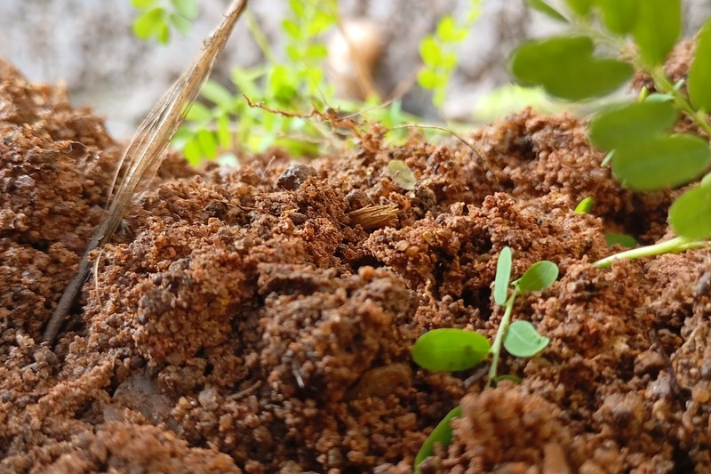
Coarse Particle TextureSandy Soil Structure
Composed of large mineral grains with high porosity, resulting in rapid water percolation and moisture challenges where soluble nutrients easily leach past shallow root zones.
- Drainage Profile: Extremely rapid, minimal water holding
- Nutrient Retention: Low cation exchange capacity
- Management Key: Regular additions of aged cow manure and vermicompost create binding humus to hold water
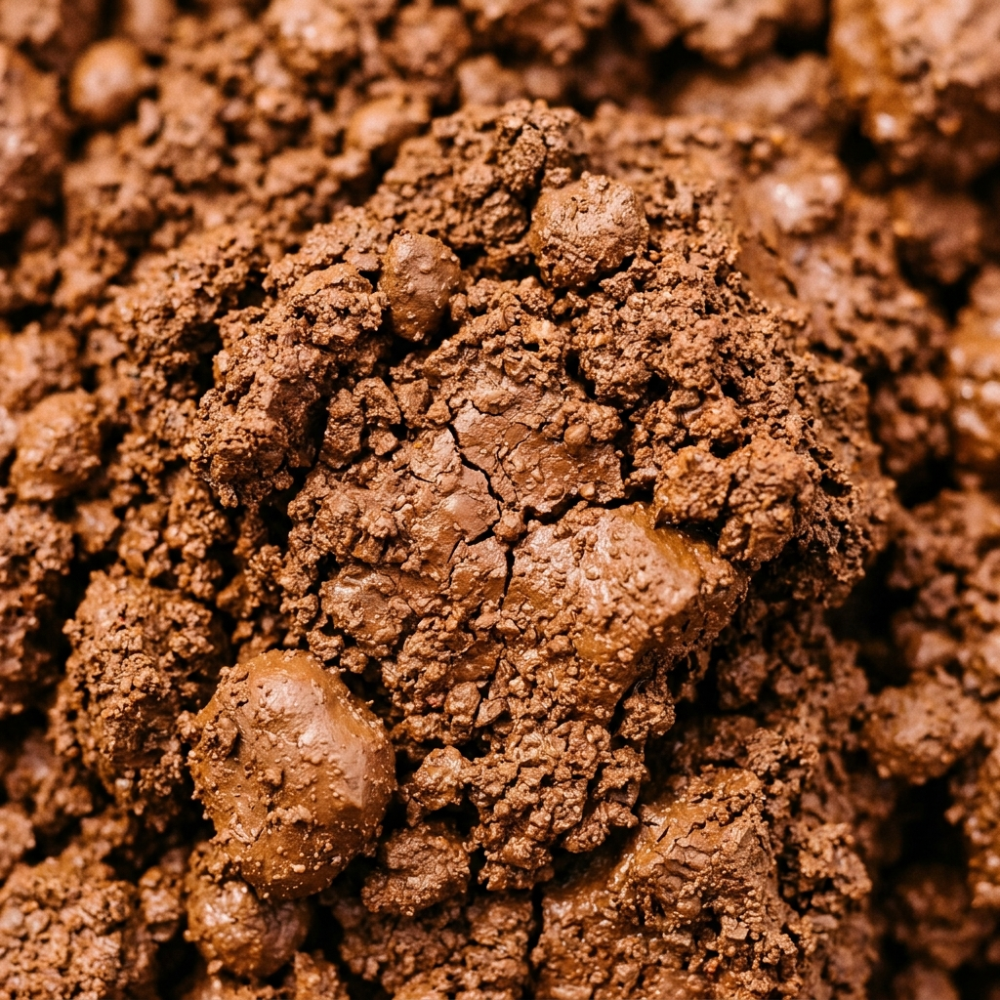
Fine Dense TextureClay Soil Structure
Features tightly packed micro-particles that hold large volumes of moisture but present poor internal aeration and waterlogging risks when heavily irrigated or compacted.
- Drainage Profile: Slow infiltration with surface crusting tendencies
- Nutrient Retention: High natural mineral binding capability
- Management Key: Incorporating coarse composted biomass and neem cake opens aeration channels and loosens hard clods
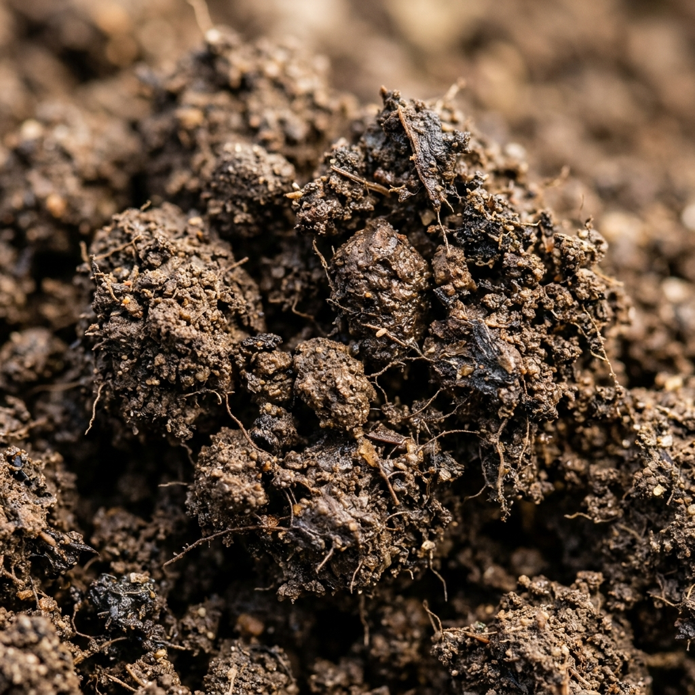
Balanced Agricultural IdealLoamy Soil Structure
The ideal equilibrium of sand, silt, and clay particles bound together by active soil organic matter, promoting deep root penetration, balanced moisture, and high biological activity.
- Drainage Profile: Perfect moisture retention with surplus runoff release
- Nutrient Retention: Optimal reservoir for sustained slow release
- Management Key: Maintenance dressings of bio-enriched vermicompost to sustain native microbial vitality
Quick In-Field Assessment: The Ribbon & Squeeze Test
Moisten a golf-ball sized soil sample in your palm and squeeze. If it falls apart instantly upon opening your hand, you have Sandy Soil. If it molds into an unbreakable ribbon longer than 5cm, it is Clay Soil. If it forms a spongy ball that crumbles softly under gentle finger pressure, you have balanced Loamy Soil.
Know What Your Soil Needs
Eliminate guesswork from your farm budget. Routine soil testing establishes accurate baseline parameters for pH, essential macronutrients, organic carbon percentage, and salinity levels.
Soil pH Levels
Measures the soil solution acidity or alkalinity. An ideal range between 6.2 and 7.5 provides the perfect biochemical climate for beneficial bacteria and prevents micronutrient lockup.
Nitrogen, Phosphorus and Potassium (NPK)
Identifies available reserves of the primary crop nutrients. Balancing NPK organically avoids toxic salt accumulation while supplying sustained nutrition throughout all vegetative cycles.
Organic Carbon (SOC)
The core barometer of living biological matter. Organic carbon sustains soil microbiome networks, enhances moisture retention, and builds crumbly humic structures in cultivated beds.
Electrical Conductivity (EC)
Measures total soluble salt concentration. High EC indicates salinization from over-irrigation or chemical synthetic residues, which stunts root tips and disrupts water intake.
Soil Moisture and Texture
Evaluates effective field water-holding capacity, pore aeration, and bulk density, guiding the volume and frequency of organic mulch and compost amendments needed per plot.
Soil Test Report Reading
Interpreting test columns enables cultivators to purchase only required organic amendments, preventing wasteful expenditures and avoiding excessive nitrogen during sensitive fruiting phases.
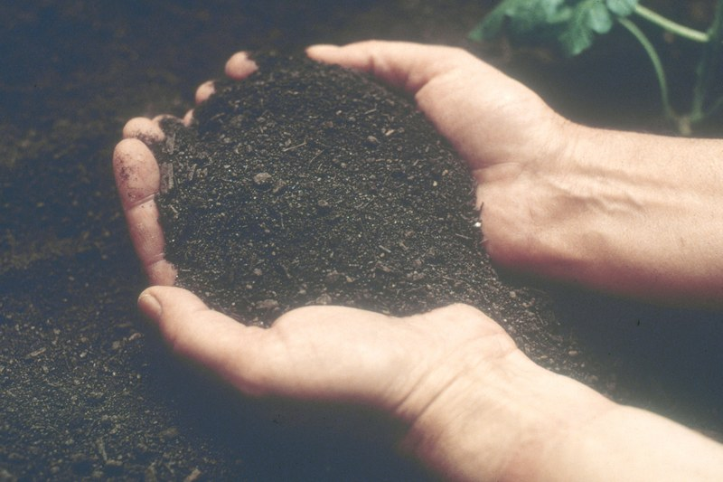
Step 1: In-Field SamplingZig-Zag Sample Collection
Collect 10 to 15 V-shaped core slices at 15cm depth across your field, discarding surface weeds, and composite them thoroughly into a representative 500g batch.
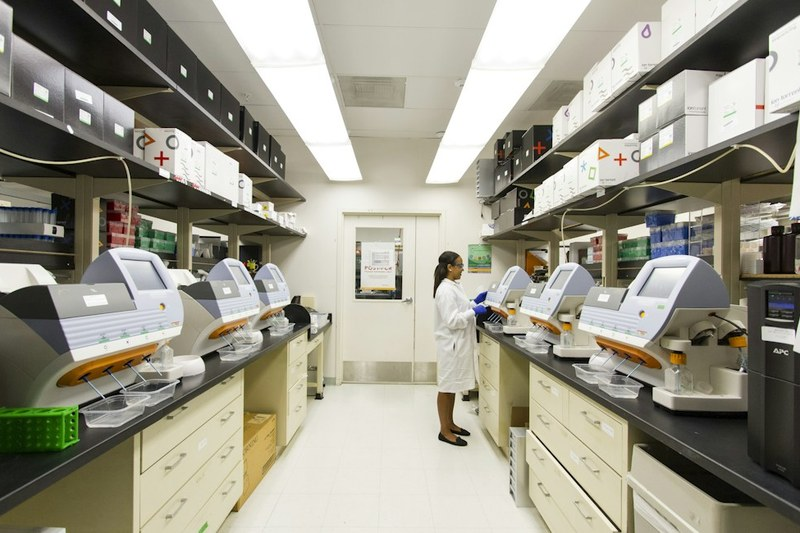
Step 2: Lab DiagnosticsLaboratory Testing Equipment
Certified testing facilities utilize spectrophotometry, flame photometers, and calibrated probes to quantify accurate elemental concentrations per acre.
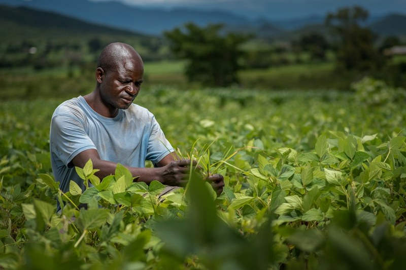
Step 3: Actionable AdviceInterpreting Soil Test Reports
Translate laboratory indices into exact tons of aged manure, bags of enriched vermicompost, and organic botanical cakes for targeted application.
Make Better Decisions for Your Farm
Selecting organic inputs requires matching soil structure, seasonal crop lifecycle demands, moisture texture, and verified manure maturity before placing large farm orders.
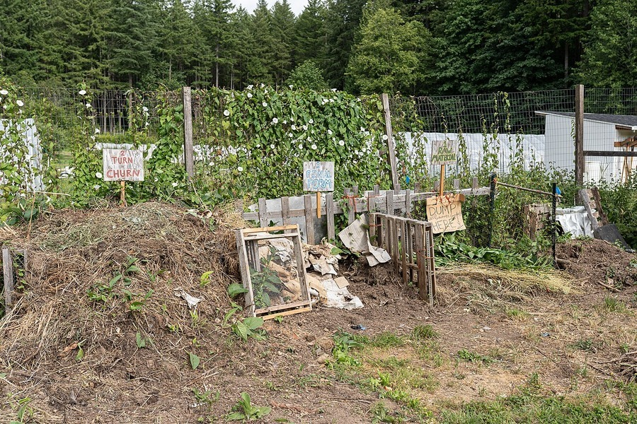
Maturity & Odor CheckChecking Manure Maturity & Quality
Properly matured organic manure exhibits a uniform dark-brown color, a cool core temperature (<30°C), and a clean forest-floor earthy aroma with zero ammonia or rancid sour smells.
- Color Indicator: Uniform dark chocolate brown or black
- Odor Check: Earthy and pleasant, completely free of foul stench
- Heat Test: Zero reheating when placed into a moist test bucket
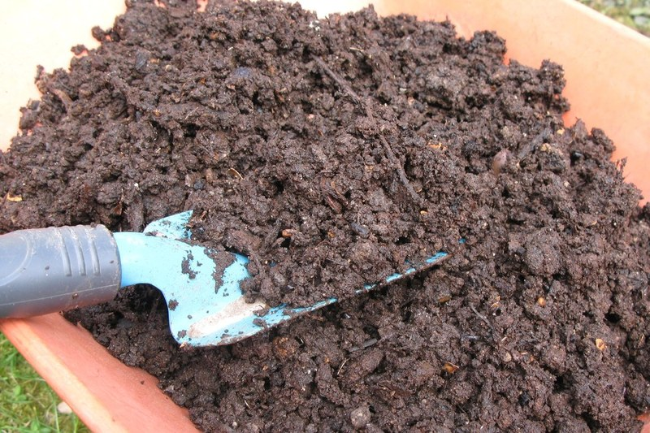
Moisture & Texture CheckUnderstanding Moisture Content & Texture
Optimal organic manure contains 25% to 30% moisture. When compressed in hand, it should form a moist clump without dripping water droplets and crumble effortlessly when touched.
- Target Moisture: 25% to 30% friable living consistency
- Under-moist Pitfall: Bone-dry powder leads to dormant microbes
- Over-moist Pitfall: Soggy clods cause anaerobic rotting
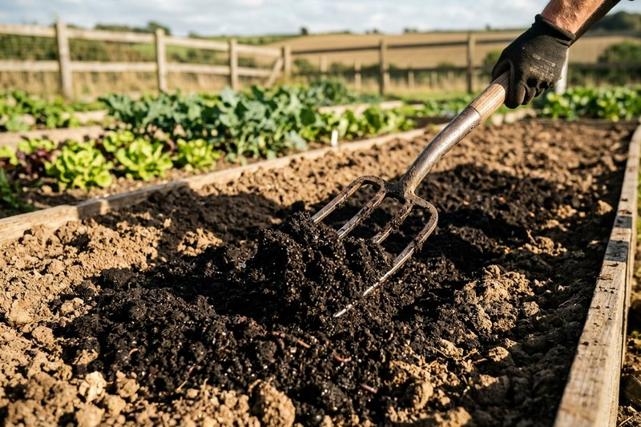
Planning & QuantitySelecting Packaging & Quantities
Plan organic inputs 3 to 4 weeks prior to basal application. Choose moisture-barrier 50kg bags for easy manual spreading or palletized jumbo tonner bags for mechanized field broadcasting.
- Packaging Selection: UV-stabilized woven HDPE with liners
- Acreage Calculation: Baseline 3 to 5 tons per acre for orchard beds
- Lead-time Planning: Order early to prevent sowing-window delays
Matching Crop Nutrient Requirements with Soil Types
| Crop Category | Nutrient Requirement Focus | Recommended Soil Formulation | Application Objective |
|---|---|---|---|
| Vegetables & Greens | Continuous steady nitrogen & high humic acids | Loose loamy matrix rich in vermicompost & leaf humus | Rapid root branching and tender leaf harvest |
| Fruit Orchards (Banana, Citrus) | High potassium reserves & deep moisture retention | Heavy basal aged dung blended with botanical cake | Sustained flowering retention & brix fruit sweetness |
| Paddy & Wetland Crops | Active microbial cycling in submerged soils | Well-decomposed aerobic compost plowed during puddling | Strong tillering and non-lodging stalk stability |
Turn Farm Waste into Useful Resources
Agricultural residues, dry leaves, and plant biomass are valuable carbon assets. Transforming them into nutrient-rich compost stops burning, preserves the carbon bank, and saves fertilizer costs.
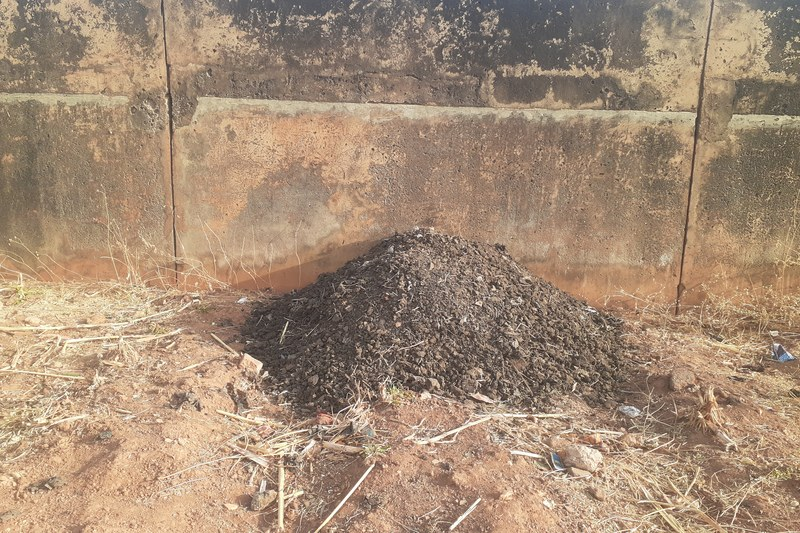
Collect Organic Waste
Gather dry crop residues, fallen leaves, straw, and post-harvest biomass into designated holding zones instead of open-field burning.
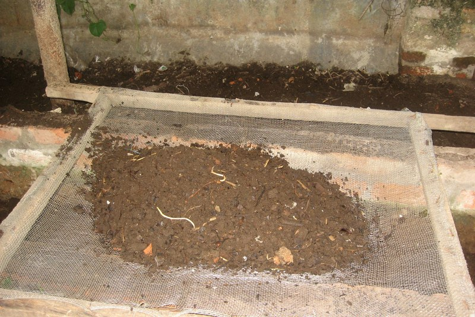
Separate Suitable Materials
Segregate clean biodegradable greens and browns. Remove plastic ties, non-compostable trash, and diseased plants to protect compost hygiene.
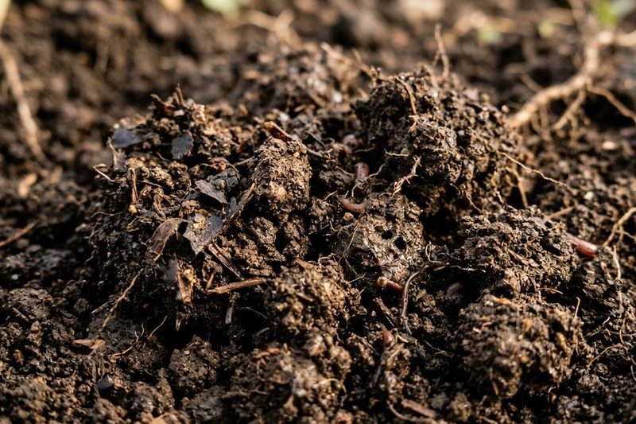
Prepare Compost Materials
Shred coarse stalks to 2-inch pieces. Build layered piles with 3 parts dry brown carbon matter to 1 part fresh green nitrogen or animal manure.
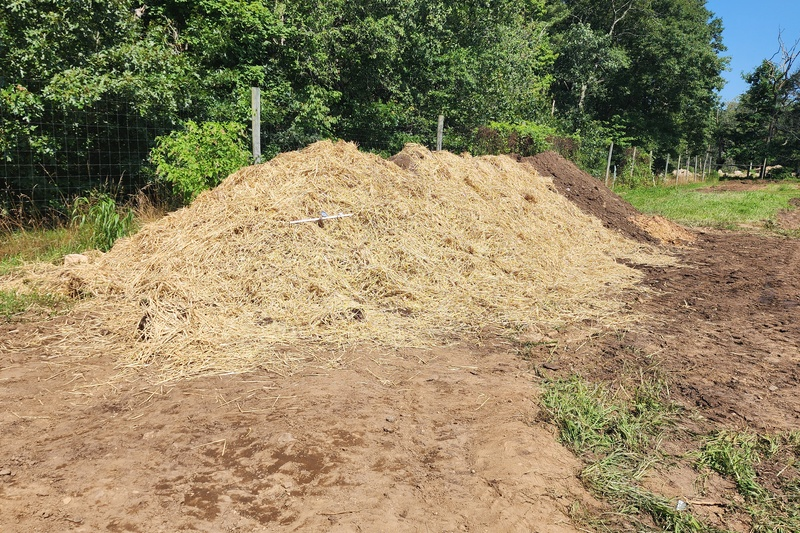
Store for Further Composting
Shield the decomposing pile under breathable covers, maintain 50% moisture, and turn periodically to cultivate rich, mature dark compost.
Materials Ideal for Farm Composting
- Browns (High Carbon): Rice straw, dry banana leaves, shredded pruning twigs, dried bagasse.
- Greens (High Nitrogen): Leguminous cover crops, green grass clippings, fresh cattle dung slurry.
- Biological Accelerators: Well-rotted vermicompost leachate, sour buttermilk spray, and beneficial microbial culture.
Farm Waste to Strictly Avoid in Piles
- Diseased Crops: Bacterial wilt stems, tobacco mosaic leaves, or virus-infected plant tissue.
- Persistent Weeds: Mature weed roots or seed heads of parthenium and nutsedge.
- Contaminants: Synthetic drip pipes, pesticide containers, treated timber, and inorganic stones.
Proper Storage Helps Maintain Manure Quality
Poor storage allows valuable nitrogen to volatize into the air and rainfall to wash away soluble bio-nutrients. Implement sound on-farm storage practices to safeguard manure vitality.
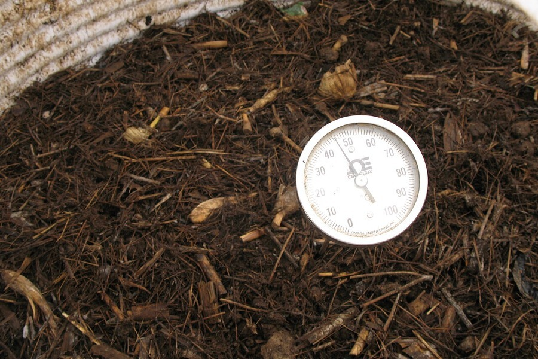
Batch Quality VerificationIdentify Properly Matured Manure
Confirm the pile is stabilized before stacking. If manure is still warm inside or emits steam, it is actively digesting and will lose nitrogen if bagged prematurely.
- Cool Core: Temperature remains near ambient field levels
- Physical Feel: Silky and crumbly without sticky clumps
- Inspection: Check packaging condition before accepting delivery
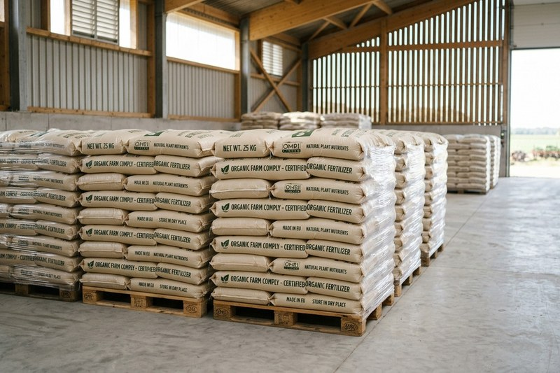
Environmental ProtectionProtecting from Rainfall & Moisture
Direct rain leaches water-soluble potassium and nitrates into the soil beneath your shed. Always store under dry, covered roofs or heavy-gauge waterproof tarpaulins.
- Roofing: Elevated covered shed with cross-ventilation
- Avoid Moisture: Elevate bags on wooden pallets off bare ground
- Rain Defense: Secure durable UV tarps over temporary outdoor heaps
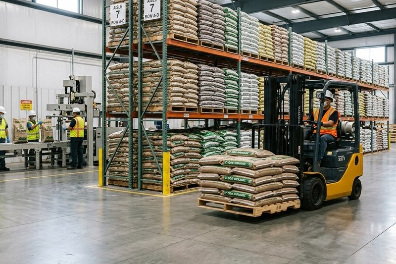
Warehouse ManagementUsing Suitable Bags & FIFO Rotation
Store manure in breathable woven sacks with protective inner liners. Follow First-In, First-Out (FIFO) stock rotation so earlier cured batches are applied first.
- Bagging Standard: High-density poly bags free of punctures
- FIFO Method: Label shipment date; use older lots first
- Clean Floor: Keep storage floors dry, cemented, and rodent-free
Rain Shielding
Never allow rainwater to soak stacked fertilizer sacks.
Air Circulation
Ensure continuous ventilation to prevent mold condensation.
Stack Height
Limit pallet stacks to 8 bags high to prevent compaction.
FIFO Rotation
Cycle inventory systematically to prevent bag degradation.
Prepare Your Farm for Every Growing Season
Sustainable cultivation relies on planned field operations. This five-stage seasonal framework guides you from soil testing and land prep to post-harvest nutrient replenishment.
Before Cultivation
Conduct pre-cultivation soil assessment, test baseline pH and carbon levels, review preceding crop yields, and estimate organic input quantities.
Land Preparation
Deep-till compacted hardpan layers, harrow the field, and broadcast basal aged cattle manure 15 to 20 days prior to planting for microbial integration.
Sowing Stage
Apply targeted vermicompost bands along planting furrows. Ensure seeds or seedling roots make direct contact with enriched, non-burning humus.
Growing Stage
Monitor soil moisture regularly, dress with neem cake to deter root pests, spread organic leaf mulch around rows, and maintain detailed field logs.
Post-Harvest Preparation
Chop residual biomass back into the topsoil, sow green-manure cover crops like sesbania or sunn hemp, and test soil condition for the following cycle.
Why Seasonal Field Record-Keeping Matters
Maintaining a simple field log of fertilizer application dates, quantities used per acre, weather patterns, and crop yields helps you fine-tune your organic budget every season. Over 3 to 4 years, these records reveal which plots have built optimal organic carbon and require fewer external inputs.
Plan Smart. Farm Better.
Before commencing field work or placing manure orders, run through this six-point agricultural readiness checklist to guarantee maximum efficiency and healthy yields.
Have you checked your soil condition?
Assess texture (sandy, clay, or loamy), moisture levels, and compaction depth before tillage.
Do you know your crop requirements?
Identify specific nitrogen, phosphorus, and potassium needs across each growth phase.
Have you reviewed your soil test report?
Check current pH, organic carbon percentage, and salinity levels to guide input dosages.
Have you planned your organic input quantity?
Calculate accurate tonnages for basal dressing and reserve bags for subsequent vegetative stages.
Is your manure storage area ready?
Verify that covered sheds, raised pallet platforms, and waterproof tarpaulins are prepared.
Have you planned your seasonal farm activities?
Schedule plowing, basal blending, sowing dates, and irrigation cycles ahead of time.
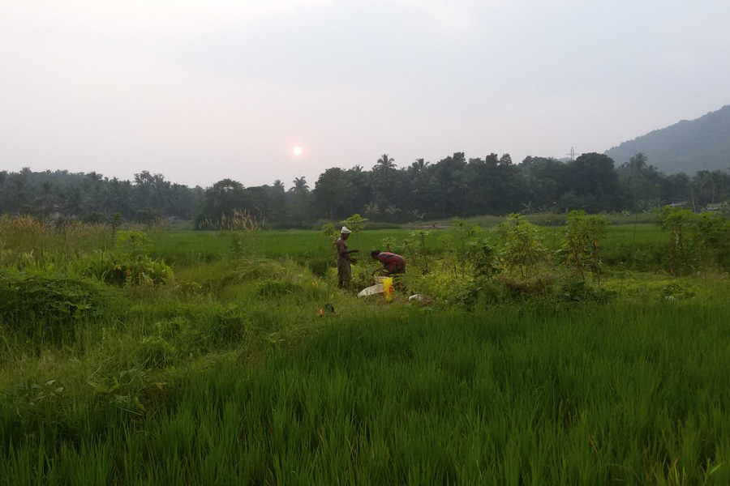
Cultivate with Complete Confidence
Structured seasonal planning prevents unexpected nutrient shortfalls and ensures timely harvest cycles.
Common Questions About Organic Farm Preparation
Straightforward answers to the most common questions farmers ask regarding soil assessment, manure quality, on-farm composting, and input storage.